2024
Janvier
-
14 —
Films pas tip top
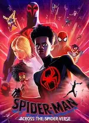
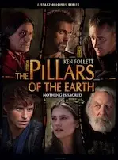
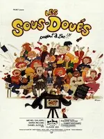
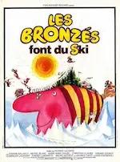
Spider-man : Across the spider-verse, Les piliers de la Terre, I give my first love to you, Les sous-doués passent le bac, Les Bronzés font du ski -
14 —
Trois films d’animation
♡ La maison des égarées, Ron débloque, ♡ Magical DoReMi : À la recherche des apprenties sorcières
-
07 —
Des questions sans réponse
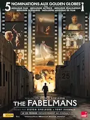
Dream scenario, Le monde après nous, The Fabelmans
2023
Décembre
-
31 —
Noël, encore, action comique et romance foireuse
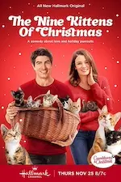
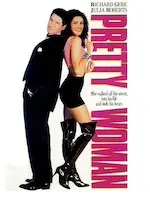
Un château pour Noël, ♡ 9 chatons pour Noël, The family plan, Pretty Woman -
30 —
💖 Quatre films excellents
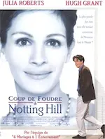
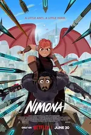
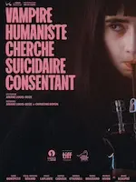
♡ Coup de foudre à Notting Hill, ♡ Nimona, ♡ Vampire humaniste cherche suicidaire consendant, ♡ Le rêve de l’okapi -
21 —
Autres films visionnés
L’ascension, ♡ A timeless Christmas, The family camp
-
17 —
Marathon ciné !
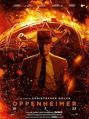
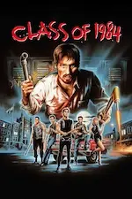
Oppenheimer, Un stupéfiant Noël, Class 1984, Noël au chalet, In love and deep water, How to fall in love by Christmas -
09 —
Noël et hypnose
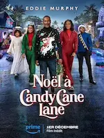
Noël à Candy Cane Lane, ♡ Noël en Écosse, Hypnotic -
09 —
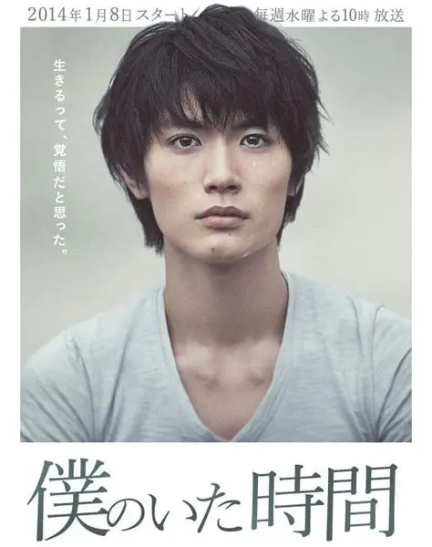
💖 Boku no Ita Jikan, série sortie 2014 -
07 —
Animation, Poney de Noël et thriller
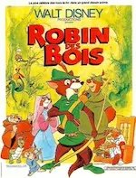
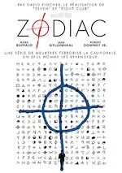
♡ Trois frères Noël et un couffin, Léo, ♡ Robin des bois, Zodiac
Novembre
-
25 —
Autres films sympas
Le Noël surprise d’Emily, Please don’t destroy the treasure of Foggy Mountain
- 19 — Upload, série débutée en 2020
-
19 —
💖 Panoplie de « Poney de Noël »
♡ Un Noël so British, ♡ The Royal Nanny, ♡ Il faut sauver la boutique de Noël, Noël à la ferme
-
18 —
 🎶 Akai Ito, série sortie 2008
🎶 Akai Ito, série sortie 2008
-
03 —
Films vus


 Près des yeux, près du cœur, Gran Turismo, The Ghastly brothers
Près des yeux, près du cœur, Gran Turismo, The Ghastly brothers
Octobre
-
31 —
Les derniers films vus


 La très très grande classe, L’autre Zoey, Lectures diaboliques, Little Evil
La très très grande classe, L’autre Zoey, Lectures diaboliques, Little Evil -
14 —
Quelques films vus récemment


 Respire, Wahou !, Elvira maîtresse des ténèbres, Les Trolls 2
Respire, Wahou !, Elvira maîtresse des ténèbres, Les Trolls 2 -
06 —
 Le manoir hanté sorti en 2023
Le manoir hanté sorti en 2023
-
01 —
 💖 Suzume no Tojimari sorti en 2023
💖 Suzume no Tojimari sorti en 2023